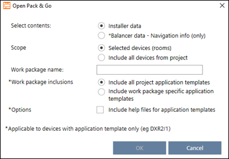

Creating a Pack & Go file
You can select Installer data or Balancer date according to the user role of the recipient. Also you can choose to include all devices of the project or the devices you selected.

- The notification class must be defined at engineering time. A change in a Pack & Go project is not possible at later time.
- When a new device PXC4/5/7 is added in ABT Site or DXR2 from ABT Pro Add device in Pack&Go project, then notification class selected during engineering of the device will be applied automatically.

Option | Description |
|---|---|
Installer data | Contains information on devices, and provides firmware update functionality |
| Only visible if the project password protection is set to low by your local tool manager. The check box is selected by default to ensure a password must be provided by external provides. Clear the check box if you do not want Installers to enter a password. |
Balancer data | Restricted to connection settings, Configure and download (with limited functionality), Upload, Global functions, and Export. |
Selected devices (rooms) | Includes only the selected devices. |
Include all devices from project | Includes all devices contained in the project. |
Work package name | Entering a work package name is required. The name will display in the Building structure table, in the Pack & Go column. |
Include all project application templates | You can select to include all project application templates. |
Include work package specific application templates | Only include application templates related to the work package |
| Optionally, you can include the corresponding application helps |
 Recipient needs to enter password
Recipient needs to enter password
- At least one device is created and configured.
- The notification class must be defined at engineering time. A change in a Pack & Go project is not possible at later time.
- Select one or more devices, or any other element in the building structure which contains devices.
- Right-click the selected elements and select Create Pack & Go.
- The Create Pack & Go dialog box opens.
- Select the contents to be included.
- In the Name work package field, enter a description (mandatory).
- In the Work Package Inclusion, select work package specific templates or all project templates.
- Click OK.
- A Pack & Go file is created and stored in the default directory for exports.
- The devices included in the work package are locked.
- The application templates included in the work package are locked.
- The building hierarchy is locked.
You can define the default export path in Project Manager > Settings > Export path.
Settings
- At least one device is created and configured.
- The notification class must be defined at engineering time. A change in a Pack & Go project is not possible at later time.
- Select one or more devices, or any other element in the building structure which contains devices.
- Right-click the selected elements and select Create Pack & Go.
- The Create Pack & Go dialog box opens.
- Select Balancer data.
- Select the contents to be included.
- In the Name work package field, enter a description (optional).
- In the Work Package Inclusion, select work package specific templates or all project templates.
- Click OK.
- A Pack & Go file is created and stored in the default directory for exports.
- The devices included in the work package are not locked.
- The application templates included in the work package are not locked.
- The building hierarchy is not locked.